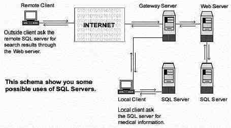

L
i n u x P a r
k
при
поддержке ВебКлуба |
Глава 17 Серверное программное обеспечение (Сервис баз данных) -
PostgreSQL серверВ этой главе
OpenLDAP
сервер
Конфигурации
Организация
защиты OpenLDAP
Утилиты
создания и поддержки OpenLDAP
Утилиты
пользователя OpenLDAP
Netscape
Address Book клиент для LDAP
Linux сервер
баз данных PostgreSQL
Создание и
инсталляция базы данных из-под пользователя Postgres
Конфигурации
Команды
|
|
Краткий обзор.
Однажды занявшись обслуживанием и поддержкой сервисов для
пользователей, вы неизбежно столкнетесь с тем, что вам нужно хранить информацию
о них в архиве так, чтобы она была доступна и легко модифицировалась в любое
время. Эти задачи могут быть решение использованием баз данных. Много разных баз
данных доступно под Linux; выбрать какую-нибудь одну очень трудно, так как она
должна поддерживать несколько языков программирования, стандарты и широкий
спектр возможностей. PostgreSQL, оригинально разработанная в UC Berkeley
Computer Science Department, является пионером многих объектно- реляционных
концепций сейчас доступных в коммерческих базах данных. Она предоставляет
поддержку языков SQL92/SQL3, целостность транзакций и расширяемость типов.
Как написано на веб сервере PostgreSQL:
PostgreSQL – это изощренная объектно-реляционная система
управления базами данных DBMS, поддерживающая практически все SQL конструкции,
включая вложенный select, транзакции, и определяемые пользователем типы и
функции. Это наиболее продвинутая база данных, доступная в исходных кодах в
настоящее время.

Эти инструкции предполагают.
Unix-совместимые
команды.
Путь к исходным кодам “/var/tmp” (возможны другие
варианты).
Инсталляция была проверена на Red Hat Linux 6.1 и 6.2.
Все шаги
инсталляции осуществляются суперпользователем “root”.
PostgreSQL версии
6.5.3
Пакеты.
Домашняя страница PostgreSQL: http://www.postgresql.org/
FTP сервер PostgreSQL: 216.126.84.28
Вы должны
скачать: postgresql-6.5.3.tar.gz
Предварительные требования.
Перед компиляцией PostgreSQL вам необходимо убедиться, что на
вашей системе установлен пакет egcs-c++-version.i386.rpm. Этот пакет
располагается на вашем Red Hat Linux CD-ROM в каталоге “RedHat/RPMS”. После
компиляции и инсталляции PostgreSQL вы можете удалить его из вашей
системы.
Проверьте, что egcs-c++-version.i386.rpm уже инсталлирован,
используя команду:
[root@deep /]# rpm -q
egcs-c++
Для инсталляции egcs-c++-version.i386.rpm выполните следующие
команды:
[root@deep /]# mount /dev/cdrom /mnt/cdrom
[root@deep /]# cd /mnt/cdrom/RedHat/RPMS
[root@deep RPMS]# rpm -Uvh egcs-c++-version.i386.rpm
egcs-c++ ##################################################
Тарболы. Хорошей идеей будет создать список файлов
установленных в вашей системе до инсталляции PostgreSQL и после, в результате, с
помощью утилиты diff вы сможете узнать какие файлы были установлены.
Например,
До инсталляции:
find /* >
PostgreSQL1
После инсталляции:
find /* >
PostgreSQL2
Для получения списка установленных файлов:
diff PostgreSQL1 PostgreSQL2 >
PostgreSQL-Installed
Раскройте тарбол:
[root@deep /]#
cp postgresql-version.tar.gz /var/tmp
[root@deep /]# cd
/var/tmp
[root@deep tmp]# tar xzpf postgresql-version.tar.gz
Компиляция и оптимизация.
Шаг 1
Первое, для уменьшения риска безопасности, мы создадим
непривилегированный бюджет пользователя “postgres”, который должен владеть
файлами Postgres. Для этого используйте следующую команду:
[root@deep /]# useradd -M -o -r -d /var/lib/pgsql -s
/bin/bash -c "PostgreSQL Server" -u 40 postgres >/dev/null 2>&1 ||
: Шаг 2
Перейдите в новый PosgreSQL каталог, а затем в подкаталог
“src”. Введите следующие команды на вашем терминале:
[root@deep /]# cd /var/tmp/postgresql-6.5.3
[root@deep
postgresql-6.5.3]# cd src
CC="egcs" \
./configure \
--prefix=/usr
\
--enable-locale
Редактируйте файл Makefile.global (vi +210 Makefile.global) и
измените следующие строки:
CFLAGS= -I$(SRCDIR)/include
-I$(SRCDIR)/backend
Должна быть:
CFLAGS= -I$(SRCDIR)/include -I$(SRCDIR)/backend -O9 -funroll-loops
-ffast-math -malign-double -mcpu=pentiumpro -march=pentiumpro
-fomit-frame-pointer -fno-exceptions
Это оптимизационные флаги для сервера PostgreSQL. Конечно, вы
должны приспособить их под вашу систему и процессор.
Шаг 3
Сейчас, мы должны скомпилировать и инсталлировать PosgreSQL на
сервере:
[root@deep src]# make all
[root@deep
src]# cd ..
[root@deep postgresql-6.5.3]# make -C src install
[root@deep
postgresql-6.5.3]# make -C src/man install
[root@deep postgresql-6.5.3]#
mkdir -p /usr/include/pgsql
[root@deep postgresql-6.5.3]# mv
/usr/include/access /usr/include/pgsql/
[root@deep postgresql-6.5.3]# mv
/usr/include/commands /usr/include/pgsql/
[root@deep postgresql-6.5.3]# mv
/usr/include/executor /usr/include/pgsql/
[root@deep postgresql-6.5.3]# mv
/usr/include/lib /usr/include/pgsql/
[root@deep postgresql-6.5.3]# mv
/usr/include/libpq /usr/include/pgsql/
[root@deep postgresql-6.5.3]# mv
/usr/include/libpq++ /usr/include/pgsql/
[root@deep postgresql-6.5.3]# mv
/usr/include/port /usr/include/pgsql/
[root@deep postgresql-6.5.3]# mv
/usr/include/utils /usr/include/pgsql/
[root@deep postgresql-6.5.3]# mv
/usr/include/fmgr.h /usr/include/pgsql/
[root@deep postgresql-6.5.3]# mv
/usr/include/os.h /usr/include/pgsql/
[root@deep postgresql-6.5.3]# mv
/usr/include/config.h /usr/include/pgsql/
[root@deep postgresql-6.5.3]# mv
/usr/include/c.h /usr/include/pgsql/
[root@deep postgresql-6.5.3]# mv
/usr/include/postgres.h /usr/include/pgsql/
[root@deep postgresql-6.5.3]# mv
/usr/include/postgres_ext.h /usr/include/pgsql/
[root@deep postgresql-6.5.3]#
mv /usr/include/libpq-fe.h /usr/include/pgsql/
[root@deep postgresql-6.5.3]#
mv /usr/include/libpq-int.h /usr/include/pgsql/
[root@deep postgresql-6.5.3]#
mv /usr/include/ecpgerrno.h /usr/include/pgsql/
[root@deep postgresql-6.5.3]#
mv /usr/include/ecpglib.h /usr/include/pgsql/
[root@deep postgresql-6.5.3]#
mv /usr/include/ecpgtype.h /usr/include/pgsql/
[root@deep postgresql-6.5.3]#
mv /usr/include/sqlca.h /usr/include/pgsql/
[root@deep postgresql-6.5.3]# mv
/usr/include/libpq++.H /usr/include/pgsql/
[root@deep postgresql-6.5.3]#
mkdir -p /usr/lib/pgsql
[root@deep postgresql-6.5.3]# mv /usr/lib/*source
/usr/lib/pgsql/
[root@deep postgresql-6.5.3]# mv /usr/lib/*sample
/usr/lib/pgsql/
[root@deep postgresql-6.5.3]# mkdir -p
/var/lib/pgsql
[root@deep postgresql-6.5.3]# chown -R postgres.postgres
/var/lib/pgsql/
[root@deep postgresql-6.5.3]# chmod 755
/usr/lib/libpq.so.2.0
[root@deep postgresql-6.5.3]# chmod 755
/usr/lib/libecpg.so.3.0.0
[root@deep postgresql-6.5.3]# chmod 755
/usr/lib/libpq++.so.3.0
[root@deep postgresql-6.5.3]# strip
/usr/bin/postgres
[root@deep postgresql-6.5.3]# strip
/usr/bin/postmaster
[root@deep postgresql-6.5.3]# strip
/usr/bin/ecpg
[root@deep postgresql-6.5.3]# strip
/usr/bin/pg_id
[root@deep postgresql-6.5.3]# strip
/usr/bin/pg_version
[root@deep postgresql-6.5.3]# strip
/usr/bin/pg_dump
[root@deep postgresql-6.5.3]# strip
/usr/bin/pg_passwd
[root@deep postgresql-6.5.3]# strip
/usr/bin/psql
[root@deep postgresql-6.5.3]# rm -f
/usr/lib/global1.description
[root@deep postgresql-6.5.3]# rm -f
/usr/lib/local1_template1.description
Команда “make” компилирует все исходные файлы в исполняемые
двоичные файлы и команды “make install” инсталлирует исполняемые и все
сопутствующие файлы в необходимое место. “mkdir” создаст новый каталог “pgsql” в
каталогах “/usr/include” и “/usr/lib”, и затем мы переместим все подкаталоги и
файлы, связанные с PostgreSQL из каталогов “/usr/include” и “/usr/lib” в
“/usr/include/pgsql” и “/usr/lib/pgsql” соответственно. Команда "chown"
установит правильного владельца и группу для каталога “/var/lib/pgsql”. Команда
“strip” удалит все символы из объектных файлов. Это приведет к уменьшению
размеров соответствующих файлов, что улучшит производительность программ.
Команда “rm” удалит файлы “global1.description” и
”local1_template1.description”, которые не нужны программе PosgreSQL.
После того, как вы проинсталлировали PostgreSQL на сервере,
необходимо создать базу данных до запуска PostgreSQL сервера.
Для создания
базы данных используйте следующую команду:
[root@deep /]# su postgres
[postgres@deep /]$ initdb --pglib=/usr/lib/pgsql --pgdata=/var/lib/pgsql
We are initializing the database system with username postgres (uid=40).
This user will own all the files and must also own the server process.
Creating Postgres database system directory /var/lib/pgsql/base
Creating template database in /var/lib/pgsql/base/template1
Creating global classes in /var/lib/pgsql/base
Adding template1 database to pg_database...
Vacuuming template1
Creating public pg_user view
Creating view pg_rules
Creating view pg_views
Creating view pg_tables
Creating view pg_indexes
Loading pg_description
[postgres@deep /]$ chmod 640 /var/lib/pgsql/pg_pwd
[postgres@deep /]$ exit
exit
[root@deep /]#
Опция “--pglib” будет задавать месторасположение библиотек
PostgreSQL, а “-- pgdata” определит место, где будут располагаться ваши базы
данных.
ЗАМЕЧАНИЕ. Не создавайте базы данных из под пользователя
“root”! Это создаст большую дыру в безопасности.
Очистка после работы
[root@deep /]# cd
/var/tmp
[root@deep tmp]# rm -rf postgresql-version/
postgresql-version.tar.gz
Удаление пакета egcs-c++-version.i386.rpm для экономии
дискового пространства.
[root@deep /]# rpm -e
egcs-c++
Команды “rm” будет удалять все файлы с исходными кодами,
которые мы использовали при компиляции и инсталляции PostgreSQL. Также будет
удален сжатый архив PostgreSQL из каталога “/var/tmp”.
Команда “rpm -e” удалит пакет egcs-c++ при помощи которого мы
компилировали сервер PosgreSQL. Заметим, что пакет egcs-c++ требуется только для
компиляции программ подобных PostgreSQL и может быть спокойно удален после
окончания этой процедуры.
Все программное обеспечение, описанное в книге, имеет
определенный каталог и подкаталог в архиве “floppy.tgz”, включающей все
конфигурационные файлы для всех программ. Если вы скачаете этот файл, то вам не
нужно будет вручную воспроизводить файлы из книги, чтобы создать свои файлы
конфигурации. Скопируйте файлы связанные с PostgreSQL из архива, измените их под
свои требования и поместите в нужное место так, как это описано ниже. Файл с
конфигурациями вы можете скачать с адреса:
http://www.openna.com/books/floppy.tgz
Для запуска PostgreSQL сервера следующие файлы должны быть
созданы или скопированы в нужный каталог:
Копируйте файл postgresql в каталог
“/etc/rc.d/init.d/”.
Вы можете взять эти файлы из нашего архива floppy.tgz.
Конфигурация скрипта “/etc/rc.d/init.d/postgresql”
Настроим скрипт “/etc/rc.d/init.d/postgresql”, который будет
отвечать за запуск и остановку PostgreSQL сервера.
Создадим скрипт postgresql
(touch /etc/rc.d/init.d/postgresql) и добавьте в него следующие строки:
#! /bin/sh
# postgresql Это инициализационный скрипт для запуска PostgreSQL сервера
#
# chkconfig: 345 85 15
# описание: запуск и остановка демона PostgreSQL, отвечающего за обработку
# всех запросов к базе данных.
# имя процесса: postmaster
# pid файл: /var/run/postmaster.pid
#
# библиотека исходных функций.
. /etc/rc.d/init.d/functions
# Get config.
. /etc/sysconfig/network
# Поверка работает ли сеть.
# это нужно для postmaster.
[ ${NETWORKING} = "no" ] && exit 0
[ -f /usr/bin/postmaster ] || exit 0
# Этот скрипт немного необычен тем, что имя демона (postmaster)
# не совпадает с именем подсистемы (postgresql)
# Смотрите, как мы осуществляем вызов.
case "$1" in
start)
echo -n "Checking postgresql installation: "
# Проверка структуры PGDATA
if [ -f /var/lib/pgsql/PG_VERSION ] && [ -d /var/lib/pgsql/base/template1 ]
then
# Проверка версии существующие PGDATA
if [ `cat /var/lib/pgsql/PG_VERSION` != '6.5' ]
then
echo "old version. Need to Upgrade."
echo "See /usr/doc/postgresql-6.5.2/README.rpm for more information."
exit 1
else
echo "looks good!"
fi
# PGDATAне существуе! Нужно выполнить Initdb.
else
echo "no database files found."
if [ ! -d /var/lib/pgsql ]
then
mkdir -p /var/lib/pgsql
chown postgres.postgres /var/lib/pgsql
fi
su -l postgres -c '/usr/bin/initdb --pglib=/usr/lib/pgsql --pgdata=/var/lib/pgsql'
fi
# Проверка, запущен ли уже postmaster...
pid=`pidof postmaster`
if [ $pid ]
then
echo "Postmaster already running."
else
# все системы запущены – удаление старых блокирующих файлов
rm -f /tmp/.s.PGSQL.* > /dev/null
echo -n "Starting postgresql service: "
su -l postgres -c '/usr/bin/postmaster -i -S -D/var/lib/pgsql'
sleep 1
pid=`pidof postmaster`
if [ $pid ]
then
echo -n "postmaster [$pid]"
touch /var/lock/subsys/postgresql
echo $pid > /var/run/postmaster.pid
echo
else
echo "failed."
fi
fi
;;
stop)
echo -n "Stopping postgresql service: "
killproc postmaster
sleep 2
rm -f /var/run/postmaster.pid
rm -f /var/lock/subsys/postgresql
echo
;;
status)
status postmaster
;;
restart)
$0 stop
$0 start
;;
*)
echo "Usage: postgresql {start|stop|status|restart}"
exit 1
esac
exit 0
Сейчас, мы должны сделать этот скрипт исполняемым и изменить
права доступа к нему:
[root@deep /]# chmod 700
/etc/rc.d/init.d/postgresql
Создайте символическую rc.d ссылку для PostgreSQL следующей
командой:
[root@deep /]# chkconfig --add
postgresql
Запустите ваш новый PostgreSQL сервер вручную следующей
командой:
[root@deep /]# /etc/rc.d/init.d/postgresql start
Checking postgresql installation: looks good!
Starting postgresql service: postmaster [22401]
Команды описанные ниже мы будем часто использовать, но на самом
деле их много больше, и вы должны изучить страницы руководства (man) и
документацию, чтобы получить более подробную информацию.
Для определения нового пользователя в вашей базе данных
используйте утилиту:
[root@deep /]# su
postgres
[postgres@deep /]$ createuser
Enter name of user to add --->
admin
Enter user's postgres ID or RETURN to use unix user ID: 500 ->
Is
user "admin" allowed to create databases (y/n) y
Is user "admin" a superuser?
(y/n) y
createuser: admin was successfully added
Для удаления пользователя из базы данных используйте утилиту
destroyuser:
[root@deep /]# su
postgres
[postgres@deep /]$ destroyuser
Enter name of user to delete
---> admin
destroyuser: delete of user admin was successful.
Для создания новой базы данных запустите утилиту
createdb:
[root@deep /]# su postgres
[postgres@deep /]$ createdb dbname (dbname - это имя создаваемой базы
данных).
Или из терминальной программы Postgres (psql)
[root@deep /]# su admin
[admin@deep /]$ psql
template1
Welcome to the POSTGRESQL interactive sql monitor:
Please read
the file COPYRIGHT for copyright terms of POSTGRESQL
[PostgreSQL 6.5.3 on
i686-pc-linux-gnu, compiled by egcs ]
type \? for help on slash
commands
type \q to quit
type \g or terminate with semicolon to execute
query
You are currently connected to the database: template1
template1
_ > create database foo;
CREATEDB
ЗАМЕЧАНИЕ. Клиентское соединение должно быть разрешено с
этого IP адреса и/или имени пользователя в файле “pg_hba.conf”, расположенного в
PG_DATA.
Другие полезные команды, выполняемые в терминальной программе
Postgres (psql):
Соединение с новой базой данных:
template1 _ > \c foo
connecting to new database: foo
foo _
>
Создание таблицы:
foo _ >
create table bar (i int4, c char(16)); CREATE foo _ >
Для проверки новой таблицы используйте команду:
foo _ > \d bar
Table = bar
+----------------------------------+----------------------------------+------------+
| Field | Type | Length |
+----------------------------------+----------------------------------+------------+
| I | int4 | 4 |
| c | char() | 16 |
+----------------------------------+----------------------------------+------------+
foo _ >
Для уничтожения таблицы, индекса, представления (view)
используйте команду:
foo _ > drop table
table_name;
foo _ > drop index index_name;
foo _ > drop view
view_name;
Для вставки данных в: (таблица уже должна быть создана)
foo _ > insert into table_name (name_of_attr1,
name_of_attr2, name_of_attr3)
foo _ > values (value1, value2,
value3);
Инсталлированные файлы
> /etc/rc.d/init.d/postgresql
> /etc/rc.d/rc0.d/K15postgresql
> /etc/rc.d/rc1.d/K15postgresql
> /etc/rc.d/rc2.d/K15postgresql
> /etc/rc.d/rc3.d/S85postgresql
> /etc/rc.d/rc4.d/S85postgresql
> /etc/rc.d/rc5.d/S85postgresql
> /etc/rc.d/rc6.d/K15postgresql
> /usr/bin/postgres
> /usr/bin/postmaster
> /usr/bin/ecpg
> /usr/bin/pg_id
> /usr/bin/pg_version
> /usr/bin/psql
> /usr/man/manl/begin.l
> /usr/man/manl/close.l
> /usr/man/manl/cluster.l
> /usr/man/manl/commit.l
> /usr/man/manl/copy.l
> /usr/man/manl/create_aggregate.l
> /usr/man/manl/create_database.l
> /usr/man/manl/create_function.l
> /usr/man/manl/create_index.l
> /usr/man/manl/create_language.l
> /usr/man/manl/create_operator.l
> /usr/man/manl/create_rule.l
> /usr/man/manl/create_sequence.l
> /usr/man/manl/create_table.l
> /usr/bin/pg_dump
> /usr/bin/pg_dumpall
> /usr/bin/pg_upgrade
> /usr/bin/pg_passwd
> /usr/bin/cleardbdir
> /usr/bin/createdb
> /usr/bin/createlang
> /usr/bin/createuser
> /usr/bin/destroydb
> /usr/bin/destroylang
> /usr/bin/destroyuser
> /usr/bin/initdb
> /usr/bin/vacuumdb
> /usr/bin/initlocation
> /usr/bin/ipcclean
> /usr/include/lib
> /usr/include/lib/dllist.h
> /usr/include/pgsql
> /usr/include/pgsql/access
> /usr/include/pgsql/access/attnum.h
> /usr/include/pgsql/commands
> /usr/include/pgsql/commands/trigger.h
> /usr/include/pgsql/executor
> /usr/include/pgsql/executor/spi.h
> /usr/include/pgsql/libpq
> /usr/include/pgsql/libpq/pqcomm.h
> /usr/include/pgsql/libpq/libpq-fs.h
> /usr/include/pgsql/libpq++
> /usr/include/pgsql/libpq++/pgconnection.h
> /usr/include/pgsql/libpq++/pgdatabase.h
> /usr/include/pgsql/libpq++/pgtransdb.h
> /usr/include/pgsql/libpq++/pgcursordb.h
> /usr/include/pgsql/libpq++/pglobject.h
> /usr/include/pgsql/port
> /usr/include/pgsql/port/linux
> /usr/include/pgsql/utils
> /usr/include/pgsql/utils/geo_decls.h
> /usr/include/pgsql/utils/elog.h
> /usr/include/pgsql/utils/palloc.h
> /usr/include/pgsql/utils/mcxt.h
> /usr/include/pgsql/fmgr.h
> /usr/include/pgsql/os.h
> /usr/include/pgsql/config.h
> /usr/include/pgsql/c.h
> /usr/include/pgsql/postgres.h
> /usr/include/pgsql/postgres_ext.h
> /usr/include/pgsql/libpq-fe.h
> /usr/include/pgsql/libpq-int.h
> /usr/include/pgsql/ecpgerrno.h
> /usr/include/pgsql/ecpglib.h
> /usr/include/pgsql/ecpgtype.h
> /usr/include/pgsql/sqlca.h
> /usr/include/pgsql/libpq++.H
> /usr/lib/libpq.a
> /usr/lib/libpq.so.2.0
> /usr/lib/libpq.so.2
> /usr/lib/libpq.so
> /usr/lib/libecpg.a
> /usr/lib/libecpg.so.3.0.0
> /usr/lib/libecpg.so.3
> /usr/lib/libecpg.so
> /usr/lib/libpq++.a
> /usr/lib/libpq++.so.3.0
> /usr/lib/libpq++.so.3
> /usr/lib/libpq++.so
> /usr/lib/plpgsql.so
> /usr/lib/pgsql
> /usr/lib/pgsql/global1.bki.source
> /usr/lib/pgsql/local1_template1.bki.source
> /usr/lib/pgsql/pg_geqo.sample
> /usr/man/manl/create_trigger.l
> /usr/man/manl/create_type.l
> /usr/man/manl/create_user.l
> /usr/man/manl/create_version.l
> /usr/man/manl/create_view.l
> /usr/man/manl/declare.l
> /usr/man/manl/delete.l
> /usr/man/manl/drop.l
> /usr/man/manl/drop_aggregate.l
> /usr/man/manl/drop_database.l
> /usr/man/manl/drop_function.l
> /usr/man/manl/drop_index.l
> /usr/man/manl/drop_language.l
> /usr/man/manl/drop_operator.l
> /usr/man/manl/drop_rule.l
> /usr/man/manl/drop_sequence.l
> /usr/man/manl/drop_table.l
> /usr/man/manl/drop_trigger.l
> /usr/man/manl/drop_type.l
> /usr/man/manl/drop_user.l
> /usr/man/manl/drop_view.l
> /usr/man/manl/end.l
> /usr/man/manl/explain.l
> /usr/man/manl/fetch.l
> /usr/man/manl/grant.l
> /usr/man/manl/insert.l
> /usr/man/manl/listen.l
> /usr/man/manl/load.l
> /usr/man/manl/lock.l
> /usr/man/manl/move.l
> /usr/man/manl/notify.l
> /usr/man/manl/reset.l
> /usr/man/manl/revoke.l
> /usr/man/manl/rollback.l
> /usr/man/manl/select.l
> /usr/man/manl/set.l
> /usr/man/manl/show.l
> /usr/man/manl/sql.l
> /usr/man/manl/update.l
> /usr/man/manl/vacuum.l
> /var/lib/pgsql
> /var/lib/pgsql/base
> /var/lib/pgsql/base/template1
> /var/lib/pgsql/base/template1/pg_proc
> /var/lib/pgsql/base/template1/pg_type
> /var/lib/pgsql/base/template1/pg_attribute
> /var/lib/pgsql/base/template1/pg_class
> /var/lib/pgsql/base/template1/pg_inherits
> /var/lib/pgsql/base/template1/pg_index
> /var/lib/pgsql/base/template1/pg_statistic
> /var/lib/pgsql/base/template1/pg_operator
> /var/lib/pgsql/base/template1/pg_opclass
> /var/lib/pgsql/base/template1/pg_am
> /var/lib/pgsql/base/template1/pg_amop
> /var/lib/pgsql/base/template1/pg_amproc
> /var/lib/pgsql/base/template1/pg_language
> /var/lib/pgsql/base/template1/pg_aggregate
> /var/lib/pgsql/base/template1/pg_ipl
> /var/lib/pgsql/base/template1/pg_inheritproc
> /var/lib/pgsql/base/template1/pg_rewrite
> /var/lib/pgsql/base/template1/pg_listener
> /var/lib/pgsql/base/template1/pg_description
> /var/lib/pgsql/base/template1/pg_attribute_relid_attnam_index
> /var/lib/pgsql/base/template1/pg_attribute_relid_attnum_index
> /var/lib/pgsql/base/template1/pg_attribute_attrelid_index
> /var/lib/pgsql/base/template1/pg_proc_oid_index
> /var/lib/pgsql/base/template1/pg_proc_proname_narg_type_index
> /var/lib/pgsql/base/template1/pg_proc_prosrc_index
> /var/lib/pgsql/base/template1/pg_type_oid_index
> /var/lib/pgsql/base/template1/pg_type_typname_index
> /usr/lib/pgsql/pg_hba.conf.sample
> /usr/man/man1/cleardbdir.1
> /usr/man/man1/createdb.1
> /usr/man/man1/createuser.1
> /usr/man/man1/destroydb.1
> /usr/man/man1/destroyuser.1
> /usr/man/man1/ecpg.1
> /usr/man/man1/initdb.1
> /usr/man/man1/initlocation.1
> /usr/man/man1/ipcclean.1
> /usr/man/man1/pg_dump.1
> /usr/man/man1/pg_dumpall.1
> /usr/man/man1/pg_passwd.1
> /usr/man/man1/pg_upgrade.1
> /usr/man/man1/postgres.1
> /usr/man/man1/postmaster.1
> /usr/man/man1/psql.1
> /usr/man/man3/catalogs.3
> /usr/man/man3/libpq.3
> /usr/man/man5/pg_hba.conf.5
> /usr/man/manl
> /usr/man/manl/abort.l
> /usr/man/manl/alter_table.l
> /usr/man/manl/alter_user.l
> /var/lib/pgsql/base/template1/pg_class_oid_index
> /var/lib/pgsql/base/template1/pg_class_relname_index
> /var/lib/pgsql/base/template1/pg_attrdef
> /var/lib/pgsql/base/template1/pg_attrdef_adrelid_index
> /var/lib/pgsql/base/template1/pg_relcheck
> /var/lib/pgsql/base/template1/pg_relcheck_rcrelid_index
> /var/lib/pgsql/base/template1/pg_trigger
> /var/lib/pgsql/base/template1/pg_trigger_tgrelid_index
> /var/lib/pgsql/base/template1/pg_description_objoid_index
> /var/lib/pgsql/base/template1/PG_VERSION
> /var/lib/pgsql/base/template1/pg_user
> /var/lib/pgsql/base/template1/pg_rules
> /var/lib/pgsql/base/template1/pg_views
> /var/lib/pgsql/base/template1/pg_tables
> /var/lib/pgsql/base/template1/pg_indexes
> /var/lib/pgsql/pg_variable
> /var/lib/pgsql/pg_database
> /var/lib/pgsql/pg_shadow
> /var/lib/pgsql/pg_group
> /var/lib/pgsql/pg_log
> /var/lib/pgsql/PG_VERSION
> /var/lib/pgsql/pg_hba.conf
> /var/lib/pgsql/pg_geqo.sample
> /var/lib/pgsql/pg_pwd